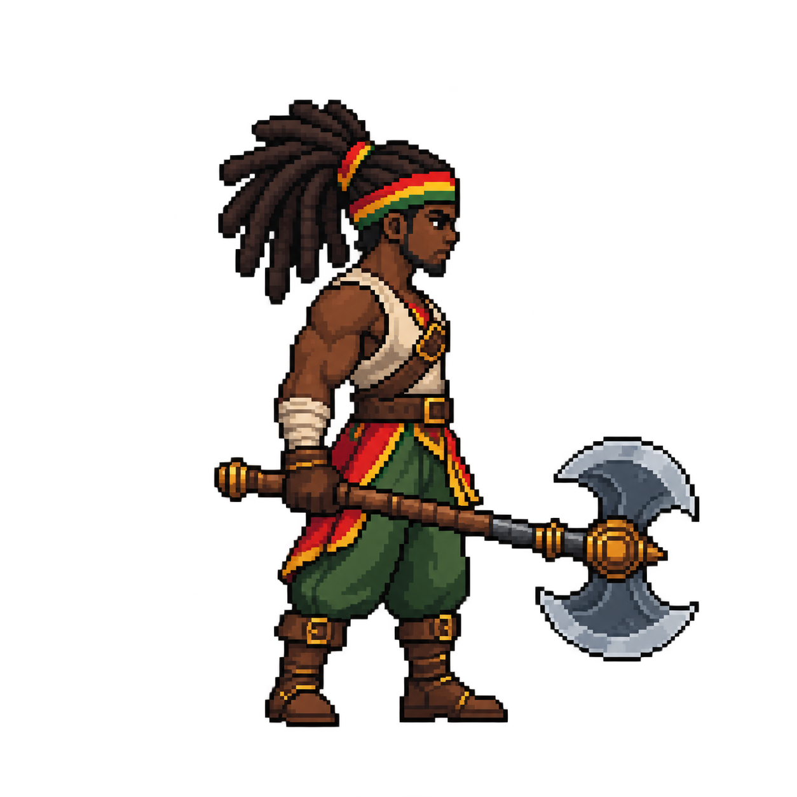

Fonte intacta exibida em escala aproximada. Não é sprite final, sala Godot ou evidência Android.
Corpo visual estimado em 52 px usando cabeça/sola aproximadas no estudo. Quadro aprovado: 128×128. Guia ciano: collider existente 28×52. Origem e alinhamento ainda não validados.

Ampliação da fonte para conferir perspectiva, cabelo, detalhes e lâminas:
Falhas técnicas: 1254×1254; 96.101 cores visíveis; alpha parcial. Próximo gate: reconstrução nativa, medidas e paleta.